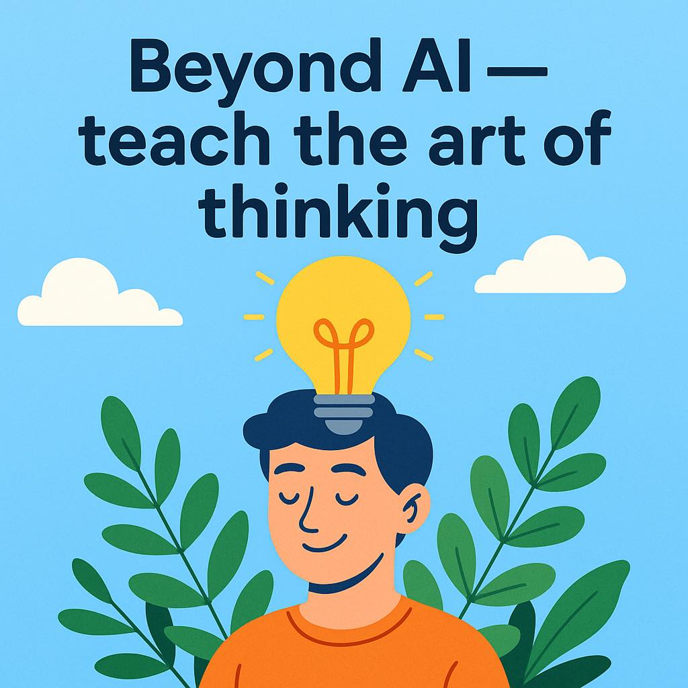

เมื่อ AI เขียน อ่าน ย่อ และรีไรต์ได้หมด วิชาภาษาไทยควรสอนอะไรต่อ และมนุษย์จะยังมีความหมายตรงไหนในห้องเรียน
{kind=link}

โพสต์นี้หยิบ “วิชาภาษาไทย” มาเป็นสนามทดลองทางความคิดว่า ถ้าเราแบ่งการเรียนเป็นโมดูลอย่างการอ่านจับใจความ ย่อความ เขียนอธิบาย เขียนโต้แย้ง ตีความวรรณกรรม หรือการสื่อสารอย่างรับผิดชอบ แล้วต้องเติม AI เข้าไปจริง ๆ เราจะออกแบบการสอนใหม่อย่างไร
ความน่าสนใจคือผู้เขียนไม่ได้ตั้งคำถามแค่เรื่องเครื่องมือ แต่ตั้งคำถามถึงความหมายของวิชาทั้งวิชา ว่าถ้าเด็กใช้ AI ทำได้หมดแล้ว เราจะยังสอนสิ่งเดิมด้วยเหตุผลอะไร และถ้าจะไปสุดทางด้วยการห้าม AI แล้วปิดเน็ตสอบ นั่นคือการปกป้องทักษะมนุษย์หรือแค่ถอยกลับไปสู่โลกเก่า
หัวใจของบทความนี้อยู่ที่ความตึงเครียดระหว่างสองความจริงพร้อมกัน คือ หนึ่ง เด็กใช้ AI อยู่แล้ว และสอง ถ้าไม่ฝึกทักษะบางอย่างด้วยตัวเองเลย มนุษย์อาจเหลือเพียงผู้กดปุ่มเรียกคำตอบจากระบบเท่านั้น นี่ทำให้การออกแบบหลักสูตรไม่อาจตอบง่าย ๆ ด้วยการ “สอน prompt” หรือ “ห้ามใช้ AI” อย่างใดอย่างหนึ่งล้วน ๆ
การห้าม AI อาจช่วยฝึกทักษะมนุษย์ แต่ก็ไม่ตอบคำถามว่าเด็กเรียนสิ่งนั้นไปทำไม
ผู้เขียนยอมรับตรง ๆ ว่าในทางปฏิบัติ เด็กก็ใช้ AI อยู่แล้ว เพราะฉะนั้นการปิดเน็ตหรือห้ามใช้ AI เพื่อให้เด็กฝึก “ทักษะมนุษย์แท้” จึงอาจเป็นเพียงคำตอบชั่วคราว และจะถูกท้าทันทีด้วยคำถามว่า “เรียนทำไม ในเมื่อใช้ AI ทำได้?”
นี่คือคำถามที่แรงมากต่อการศึกษา เพราะมันบังคับให้ครูและผู้ออกแบบหลักสูตรต้องอธิบายคุณค่าของเนื้อหาเก่าใหม่ทั้งหมด ไม่ใช่แค่เปลี่ยนวิธีสอบ
ถ้าไม่มีพื้นความรู้เดิมเลย เราจะสร้างสิ่งใหม่ที่ AI ทำไม่ได้จริงหรือไม่
อีกด้านหนึ่ง ผู้เขียนก็ไม่ได้วิ่งตามกระแสจนบอกว่าให้ AI ทำเรื่องง่ายไปทั้งหมด แล้วมนุษย์ไปทำแต่งานสร้างสรรค์ เพราะเขาตั้งคำถามกลับทันทีว่า ถ้าไม่มีพื้นความรู้เก่าเลย เราจะสร้างอะไรใหม่ได้จริงหรือ นี่คือข้อโต้แย้งสำคัญต่อความคิดที่อยากกระโดดข้ามพื้นฐานไปสู่ “ความคิดสร้างสรรค์” แบบไม่ต้องฝึกอะไรเดิม
มุมนี้ทำให้บทความยืนยันว่า แม้โลกจะเปลี่ยน แต่ foundation ยังมีความหมาย เพียงแต่เราต้องนิยามใหม่ว่าพื้นฐานไหนควรเก็บไว้ และเก็บไว้เพื่ออะไร
ตัวอย่างวิชาภาษาไทยจริง ๆ คือคำถามต่อทุกวิชาในระบบการศึกษา
แม้โพสต์นี้ใช้วิชาภาษาไทยเป็นตัวอย่าง แต่สิ่งที่มันกำลังถามจริง ๆ คือโจทย์เดียวกับทุกสาขา เมื่อ AI ช่วยทำงานพื้นฐานได้มากขึ้น หลักสูตรจะยังยึดติดกับการผลิตซ้ำทักษะแบบเดิม หรือจะออกแบบให้มนุษย์มีคุณค่าในจุดที่ AI ยังแทนไม่ได้อย่างไร
ประโยคที่ว่า “การคิดเอง มันคือศิลปะที่ไม่มี AI ตัวไหนแทนได้ แต่ถ้าไม่มีความรู้อะไรมาเลย แล้วจะคิดอะไรได้ยังไง?” จึงเป็นสรุปที่ดีที่สุดของความขัดแย้งนี้
การศึกษายุค AI อาจไม่ได้ต้องการคำตอบง่าย แต่ต้องการความซื่อสัตย์พอจะยอมรับว่าเรายังคิดไม่ออก
ตอนท้ายผู้เขียนบอกอย่างตรงไปตรงมาว่าเขายัง “คิดไม่ออกว่าจะทำยังไงดี” และนั่นอาจเป็นส่วนที่มีค่าที่สุดของโพสต์นี้ เพราะแทนที่จะรีบประกาศสูตรสำเร็จ มันยอมรับว่าระบบการศึกษากำลังอยู่ต่อหน้าปัญหาจริงที่ยังไม่มีคำตอบชัด
การยอมรับเช่นนี้ไม่ได้แปลว่าอ่อนแอ แต่สะท้อนความซื่อสัตย์ทางปัญญา ว่าในโลกที่ AI เขียนได้ทุกอย่าง เราอาจต้องเริ่มจากการถามคำถามที่ถูกก่อน แล้วค่อยใช้ทั้งมนุษย์และ AI ช่วยกันคิดคำตอบต่อไป